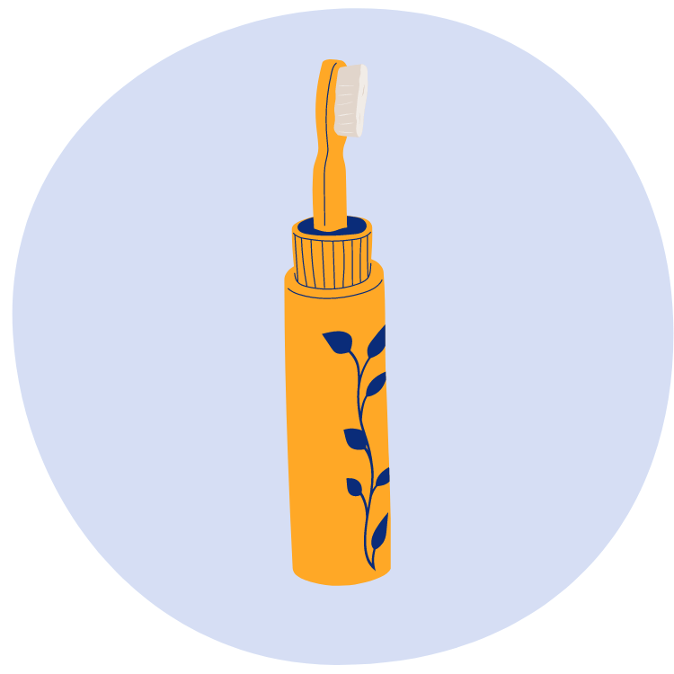
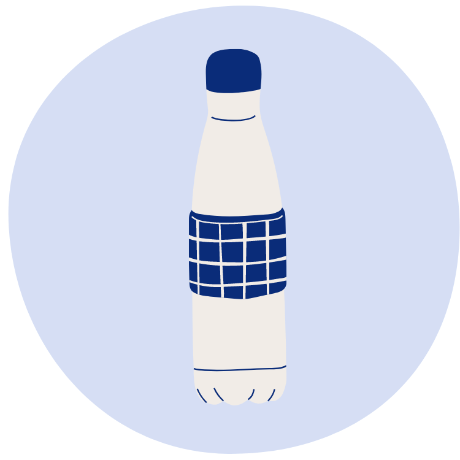
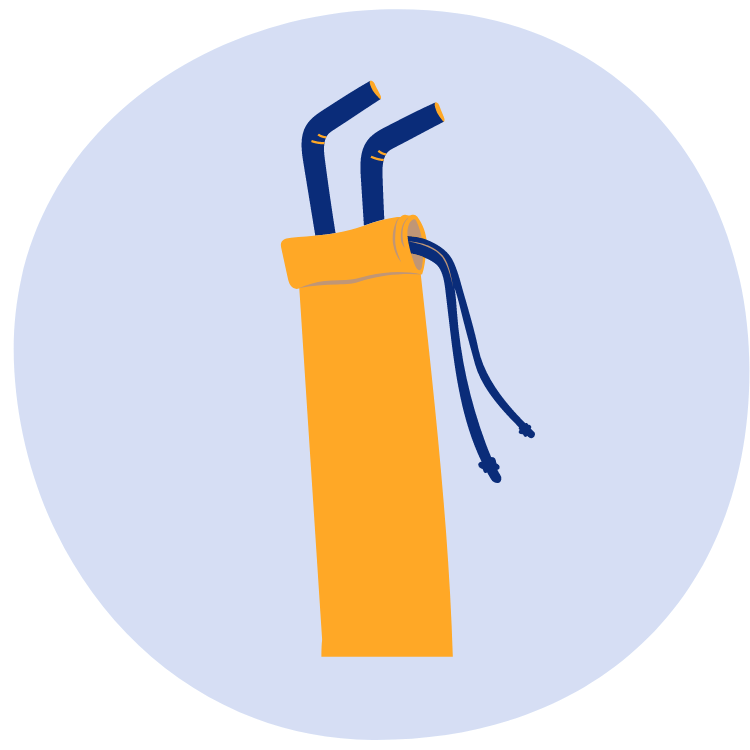
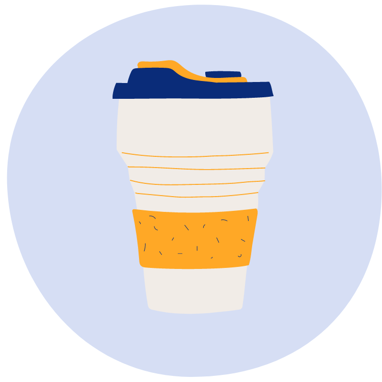
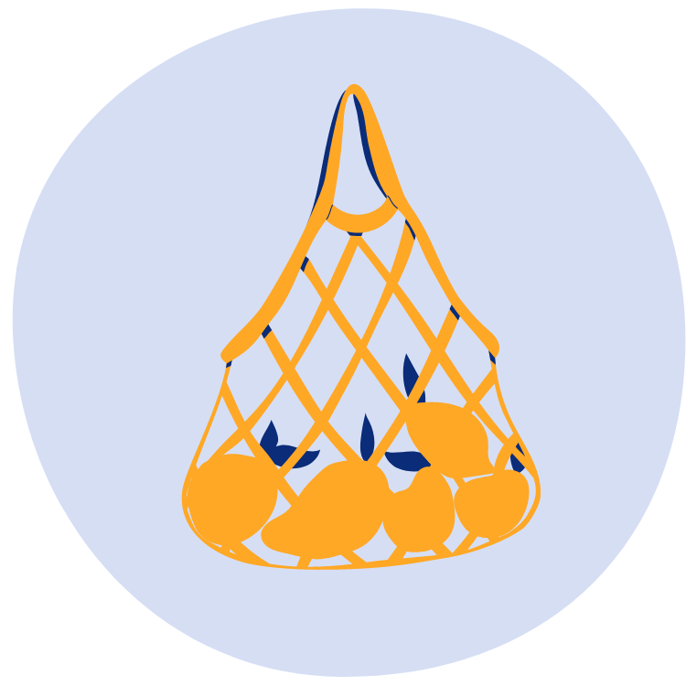

Embora um item plástico possa ser útil para nós por minutos, ele leva décadas para se decompor no oceano.

Escova de dentes:
500 anos para se decompor
500 anos para se decompor

Garrafas plásticas:
450 anos para se decompor
450 anos para se decompor

Canudos:
200 anos para se decompor
200 anos para se decompor

Copo de café:
30 anos para se decompor
30 anos para se decompor

Sacola plástica:
20 anos para se decompor
20 anos para se decompor
A conveniência tem um custo, o uso de plásticos no dia a dia prejudica nossos oceanos.
É hora de tomar uma atitude!
Há muitas maneiras de reduzir sua pegada de plástico.
Para mais dicas veja:
http://www.marineconservation.org.au